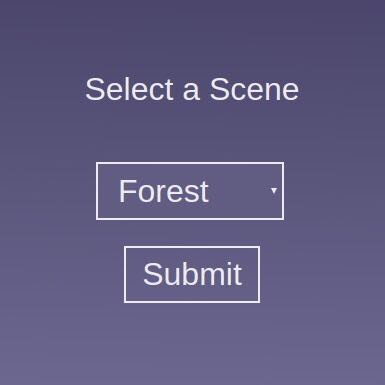
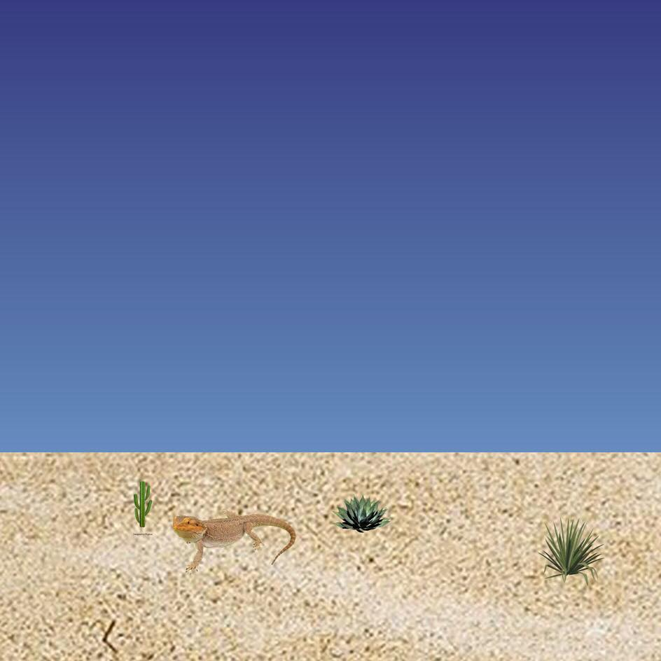

Website Background Generator
Software Design Final Project 2019
Katie Foster, Anne Jiang, Shirin Kuppusamy
Our Project
As college students, we are very busy with our studies and so rarely find the time to appreciate the outdoors as much we would like. Our product creates a background that mimics the natural light outside to create a visually pleasing color and then to create an environment that users enjoy looking at when opening a browser. We hope to enhance people’s computer experience and mental well being through our web app display.
Link to our website: http://gradient-background-generator.herokuapp.com/
Process
As we worked to develop this project, we came to several points at which we realized that we should change our approach.
For example, we started off thinking we would use a lot more Javascript than we actually ended up using. This page that you are currently on has no Python, and is just HTML, CSS, and Javascript. Originally, we were planning on generating an image from Python with a clear background, and then displaying it over this page. Unfortunately, when we attempted this approach, the image behaved as though it had an opaque white background instead of a clear one, so we were unable to see the gradient background through the image. So, we ended up taking screenshots of all the different gradient backgrounds created with Javascript and CSS, adding the foreground on top of these images in Python, and then displaying the final image as the background in the output page.
We also ended up using Flask, a web framework for Python, for things that we originally were planning to use Javascript for, such as passing the user’s selected scene into the part of the program that generates and image.
Implementation
This project relies on several different components working together.
We used Flask, a web framework for Python, to tie together the Python and web components of this project. The welcome screen you see here allows users to enter which scene they want. Once they click submit, the html form sends the user’s choice of scene, as well as their local time and the dimensions of their screen to Flask, which then calls upon the function to generate the image, and save it to a local directory. Then, the Flask passes the name of the image file to output page, which displays the image as a background.
The first layer to the program takes the date from the Flask form and opens a gradient image generated in CSS corresponding to that hour. It also reads scene choice from the Flask form and opens a middleground image corresponding to that scene and chooses a list of random objects corresponding to that scene. A random number generator is used to select a random subset of images from that list. Those images are then altered to remove whitespace and apply a color overlay to the image based on the time of day. The random images are then pasted onto the middleground at a randomly generated position within the range of the screen and then this compressed image is pasted onto the background.
Results
We made a video showing the functionality and use of our program, which can be found [here] (link). You can also see pictures of various scenes at various times of day below: TODO: Pictures
Impacts and Privacy
Although this website does use the user’s time zone, and therefore some vague information about their location, the program does not store that data at all, so there is no need to worry about anyone stealing or using that data for malicious purposes. And although we intended our project to help people connect more with the outdoors and keep track of the time of day, our project might have the unintended consequence of replacing outdoor time, which would not be healthy. However, we believe that the benefits will outweigh the risks.
The Future of this Project
If we had more time to work on this, we would make some more different backgrounds, and perhaps include animation or some interactive element on the webpage. We would also want to improve our image placement, and get the random element of our program to work on Heroku.
About Us
Note: we are not actually fish.
Katie is a student in the class of 2022 at Olin College of Engineering studying Computing. On this project, she focused on making the website, integrating the website with Flask, and getting the whole project online using Heroku. In her free time, she can be found rock climbing and spinning fire as part of Olin’s Fire Arts Club.
Anne is an undergraduate studying Business IT Management and Electrical Engineering. In this project Anne worked on integrating and editing images on multiple layers to create final scenery through Python. Anne enjoys working on professional photography, working on ventures, and meditating during her free time.
Shirin, an Olin College class of 2022 student, is majoring in Biomedical Engineering with a focus in Computer Science. She enjoys exploring the intersection of software design with other areas of study, such as medicine, human sentiment, and aesthetic design. On this project, she focused on integrating the python backend elements and debugging integration errors with the web app frontend. Aside from engineering, she has a passion for dance - dancing both for the Babson College Dance Ensemble and for NNKB Dance Academy in Johns Creek, Georgia as an alumna.
User Instructions
If you want to see our website, just click here.
But if you want to fork our code and get it working on your own computer, you can fork or clone our repository here.
In order to get it running, you will need to install the PIL image library, Flask, and python-resize-image by typing the following commands into the Linux command line:
$ pip install Pillow
$ pip install Flask
$ pip install python-resize-image
Sources
Here are the links to where we got most of the images:
beachball
bag
sandandwater
Yew
fernplant
ferret
Flyingsquirrel
Fox1
hummingbird
jackrabbit
Fern
Driftwood3
FennecFox
Flowershrub
Yew
forest_sillhouette
Poppies
MountainGoat
Wildflowers2
Wildflowers3
Treee
tree2
trees
mountain1
mountain2
bunny
yew
Starfish2
Starfish
Shrubby
Sanddollar2
Plant
optimisticlizard
mushroom2
mushroom
grumpylizard
Lizard4
hermitcrab
hermitcrab2
Fred(merecat)
Georgey(merecat)
Plant2
Plant4
Forest1
Plant3
yucca
wildcat1
wildcat2
wallace
spikes
lizardlizarding
lizard2
cactflowery
We got the colors that were used in the gradient background by taking color samples off this time lapse video.
The stars were taken directly from Lunar Logic’s Auroral Animated Background Gradients. The moon is based off the code for the stars, but modified. Here is the link to Lunar Logic’s repository.